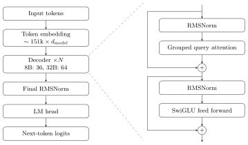
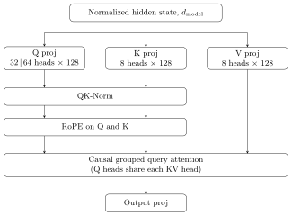
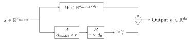

Qwen3 and LoRA architecture
Large foundation models such as [?] are trained on vast datasets containing trillions of tokens across various domains, effectively distilling (almost all recorded) human knowledge and capabilities into their parameters. Dense model: every parameter is used for every token. When a token passes through a layer, it goes through the whole FFN. MoE (Mixture of Experts): The single FFN is replaced by smaller FFNs + router. For each token, the router picks experts to use. Attention stays dense.
Architecture
Fig. 1 shows the Qwen3 architecture (dense, decoder-only). Input tokens are mapped by the token embedding ($\sim 151\text{k}$ vocabulary) to vectors of size $d_\text{model}$. These pass through $N$ identical decoder blocks (8B: 36, 32B: 64). Each block has two parts: grouped query attention and a SwiGLU feed forward network. Both get an RMSNorm before them and a residual connection ($+$) around them. After the last block a final RMSNorm is applied, and the LM head maps each hidden state to next-token logits over the vocabulary. Throughout this report we use the 8B model, so $d_\text{model} = 4096$.

Grouped Query Attention

The input is \[ X \in \mathbb{R}^{n \times d_\text{model}} = \begin{pmatrix} x_0 \\ \vdots \\ x_{n-1} \end{pmatrix}, \qquad x_m \in \mathbb{R}^{d_\text{model}}, \tag{1} \] where $n$ is the number of tokens of the input sequence. First, an RMS-Norm is applied, \[ \tilde{x}_m = \frac{x_m}{\sqrt{\frac{1}{d_\text{model}}\sum_{i=1}^{d_\text{model}} x_{m,i}^2 + \epsilon}} \odot \gamma \in \mathbb{R}^{d_\text{model}}, \tag{2} \] where $\epsilon$ is fixed and $\gamma \in \mathbb{R}^{d_\text{model}}$ is learned. Then the linear projections \begin{align} Q &= \tilde{X} W_Q \in \mathbb{R}^{n \times (32 \cdot 128)} && \text{(32 heads)}, \tag{3}\\ K &= \tilde{X} W_K \in \mathbb{R}^{n \times (8 \cdot 128)} && \text{(8 heads)}, \tag{4}\\ V &= \tilde{X} W_V \in \mathbb{R}^{n \times (8 \cdot 128)} && \text{(8 heads)} \tag{5} \end{align} are computed, so $K$ and $V$ are four times narrower than $Q$.
Next comes QK-Norm. Every 128-dim query and key vector gets RMS norm: \[ \hat{q}_m^{(h)} = \mathrm{RMSNorm}_{\gamma_q}\bigl(Q_m^{(h)}\bigr), \qquad \hat{k}_m^{(j)} = \mathrm{RMSNorm}_{\gamma_k}\bigl(K_m^{(j)}\bigr), \tag{6} \] with $Q_m^{(h)} \in \mathbb{R}^{128}$, $h \in \{0, \dots, 31\}$, $j \in \{0, \dots, 7\}$. $\gamma_q$ / $\gamma_k$ are shared across heads. Why? Dot product in attention scores could grow without bound $\rightarrow$ stabilized training.
Then RoPE is applied. For each pair of dimensions (i.e. 64) define a frequency \[ \theta_i = \theta_\text{base}^{-2i/128}, \qquad \theta_\text{base} = 10^{6}, \quad i = 0, \dots, 63. \tag{7} \] Then rotate the dimension pair $(i, i+64)$ by angle $m\theta_i$ for a token at position $m$: \[ \begin{pmatrix} a_i' \\ a_{i+64}' \end{pmatrix} = \underbrace{\begin{pmatrix} \cos m\theta_i & -\sin m\theta_i \\ \sin m\theta_i & \cos m\theta_i \end{pmatrix}}_{R_m} \begin{pmatrix} a_i \\ a_{i+64} \end{pmatrix}. \tag{8} \] Since \[ (R_m \hat{q})^\top (R_l \hat{k}) = \hat{q}^\top R_{l-m} \hat{k}, \tag{9} \] the attention score depends only on the relative distance $l - m$, not absolute positions.
After that, query heads are mapped to KV heads, \[ j(h) = \lfloor h/4 \rfloor. \tag{10} \] The 8 KV heads are repeated $4\times$ to line up with the 32 query heads.
Then the attention score is computed. For $h \in \{0, \dots, 31\}$: \[ S^{(h)} = \frac{Q'^{(h)} K'^{(j(h))\top}}{\sqrt{128}} \in \mathbb{R}^{n \times n}, \tag{11} \] where $\sqrt{128}$ keeps variance of score near 1. $S_{ml}^{(h)}$ measures how strongly token $m$ attends to $l$. Set $S_{ml}^{(h)} = -\infty$ for $l > m$ so a token can't look at future tokens. \[ A_{ml}^{(h)} = \frac{\exp\bigl(S_{ml}^{(h)}\bigr)}{\sum_{l' \le m} \exp\bigl(S_{ml'}^{(h)}\bigr)} \tag{12} \] is a probability distribution over past tokens of $m$, and \[ O^{(h)} = A^{(h)} V^{(j(h))} \in \mathbb{R}^{n \times 128}. \tag{13} \] Finally, the heads are concatenated and projected: \[ O = \bigl[O^{(0)} \,|\, \dots \,|\, O^{(31)}\bigr] \in \mathbb{R}^{n \times (32 \cdot 128)}, \qquad \mathbb{R}^{n \times d_\text{model}} \ni X \leftarrow X + O W_O, \tag{14} \] with $W_O \in \mathbb{R}^{(32 \cdot 128) \times d_\text{model}}$.
During generation, we compute the next line of $O$ by \[ O_t^{(h)} = \sum_{l \le t} A_{tl}^{(h)} V_l^{(j(h))}, \qquad A_{tl} = \mathrm{Softmax}\left(\frac{q_t^{(h)} k_l^{(j)}}{\sqrt{128}}\right) \tag{15} \] $\Rightarrow$ cache $K$ and $V$ of past tokens. Thus grouping saves $4\times$ the memory.
Feed forward network
First, a second RMS Norm with own learned scale $\gamma_\text{ffn}$ is applied. This is followed by a parallel up projection \[ G = \tilde{X} W_G, \qquad U = \tilde{X} W_U, \qquad W_G, W_U \in \mathbb{R}^{d_\text{model} \times d_\text{ff}}, \tag{16} \] with $d_\text{ff} = 3 d_\text{model}$, and by element-wise gating \[ H = \mathrm{SiLU}(G) \odot U \in \mathbb{R}^{n \times d_\text{ff}}, \qquad \text{with} \quad \mathrm{SiLU}(z) = \frac{z}{1 + e^{-z}}. \tag{17} \] Finally, the down projection gives \[ Y = H W_D, \qquad W_D \in \mathbb{R}^{d_\text{ff} \times d_\text{model}}, \qquad X \leftarrow X + Y, \tag{18} \] \[ \mathrm{FFN}(x) = W_D^\top \bigl(\mathrm{SiLU}(W_G^\top x) \odot (W_U^\top x)\bigr). \tag{19} \] $\rightarrow$ No mixture across tokens $\leftarrow$ once on new token during generation.
Sampling
Compute $z_t = \tilde{x}_t W_\text{out}$ for newest position. Reshape distribution and sample from it: first $p_v \propto \exp(z_v / T)$ (during softmax; $T < 1$ sharp, $T > 1$ flatter), then keep $k$-highest, zero out rest (or top-$p$), and finally sample what remains.
Thinking: $T = 0.6$, top-$p$: 0.95, top-$k$: 20. Non-thinking: $T = 0.7$, top-$p$: 0.8, top-$k$: 20.
| Component | Shape | Qwen3-8B | Qwen3-32B |
|---|---|---|---|
| One decoder block | |||
| Attention RMSNorm $\gamma$ | $d_\text{model}$ | 4,096 | 5,120 |
| $W_Q$ | $d_\text{model} \times (H_q \cdot 128)$ | 16,777,216 | 41,943,040 |
| $W_K$ | $d_\text{model} \times (8 \cdot 128)$ | 4,194,304 | 5,242,880 |
| $W_V$ | $d_\text{model} \times (8 \cdot 128)$ | 4,194,304 | 5,242,880 |
| QK-Norm $\gamma_q$ | $128$ | 128 | 128 |
| QK-Norm $\gamma_k$ | $128$ | 128 | 128 |
| $W_O$ | $(H_q \cdot 128) \times d_\text{model}$ | 16,777,216 | 41,943,040 |
| Attention subtotala | 41,943,296 | 94,372,096 | |
| FFN RMSNorm $\gamma$ | $d_\text{model}$ | 4,096 | 5,120 |
| $W_G$ (gate) | $d_\text{model} \times d_\text{ff}$ | 50,331,648 | 131,072,000 |
| $W_U$ (up) | $d_\text{model} \times d_\text{ff}$ | 50,331,648 | 131,072,000 |
| $W_D$ (down) | $d_\text{ff} \times d_\text{model}$ | 50,331,648 | 131,072,000 |
| FFN subtotala | 150,994,944 | 393,216,000 | |
| One block total | 192,946,432 | 487,598,336 | |
| Whole model | |||
| Token embedding | $151{,}936 \times d_\text{model}$ | 622,329,856 | 777,912,320 |
| All blocks: attentiona | 1,509,958,656 | 6,039,814,144 | |
| All blocks: FFNa | 5,435,817,984 | 25,165,824,000 | |
| All blocks: RMSNorm $\gamma$ | 294,912 | 655,360 | |
| Final RMSNorm | $d_\text{model}$ | 4,096 | 5,120 |
| LM head (untied) | $d_\text{model} \times 151{,}936$ | 622,329,856 | 777,912,320 |
| Total | 8,190,735,360 $\approx$ 8.19B | 32,762,123,264 $\approx$ 32.76B | |
| Non-embeddingb | 6,946,075,648 $\approx$ 6.95B | 31,206,298,624 $\approx$ 31.21B | |
| Share of total | |||
| FFN | 66.4% | 76.8% | |
| Attention | 18.4% | 18.4% | |
| Embedding + LM head | 15.2% | 4.7% | |
| All norms | $<0.01\%$ | $<0.01\%$ | |
Layers: 36 (8B), 64 (32B); $d_\text{model}$: 4,096 (8B), 5,120 (32B); $H_q$: 32 (8B), 64 (32B); $d_\text{ff}$: 12,288 (8B), 25,600 (32B).
LoRA
Each linear projection (seven per decoder block) in every block gets an adapter. (RMSNorm, QK-Norm scales, embedding and LM head frozen (used to read new tokens).)
Example: see Fig. 3.

Each adapter adds $r \cdot (d_\text{in} + d_\text{out})$.
For Qwen3-8B at $r = 16$ this gives Table II, and across ranks, with all seven targets, Table III.
| Matrix | Shape | LoRA params per layer ($r = 16$) |
|---|---|---|
| $W_Q$ | $4096 \to 4096$ | 131,072 |
| $W_K$ | $4096 \to 1024$ | 81,920 |
| $W_V$ | $4096 \to 1024$ | 81,920 |
| $W_O$ | $4096 \to 4096$ | 131,072 |
| $W_G$ (gate) | $4096 \to 12{,}288$ | 262,144 |
| $W_U$ (up) | $4096 \to 12{,}288$ | 262,144 |
| $W_D$ (down) | $12{,}288 \to 4096$ | 262,144 |
| Per layer | 1,212,416 | |
| $\boldsymbol{\times}$ 36 layers | 43,646,976 $\boldsymbol{\approx}$ 43.6M |
| Rank $r$ | Qwen3-8B trainable | % of 8.19B | Qwen3-32B trainable | % of 32.76B |
|---|---|---|---|---|
| 8 | 21.8M | 0.27% | 67.1M | 0.20% |
| 16 | 43.6M | 0.53% | 134.2M | 0.41% |
| 32 | 87.3M | 1.07% | 268.4M | 0.82% |
| 64 | 174.6M | 2.13% | 536.9M | 1.64% |